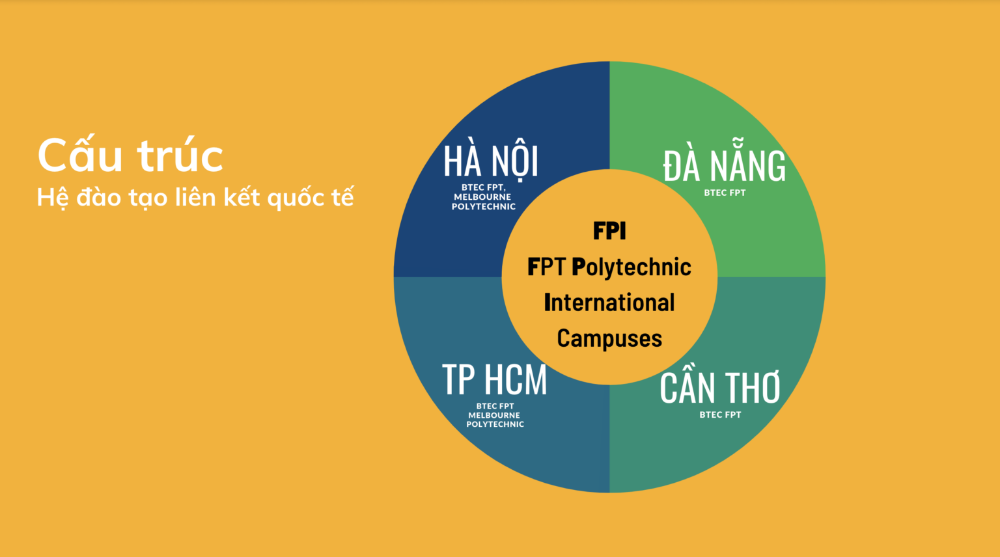

Trường Cao đẳng FPT Polytechnic là trường đào tạo trong lòng doanh nghiệp với đa ngành nghề, đa lĩnh vực. FPT Polytechnic ra đời với mong muốn đem đến cho người học những giá trị đào tạo thực tế đúng với triết lý “Thực học – Thực nghiệp”.
Các chương trình đào tạo tại Trường Cao đẳng FPT Polytechnic được thiết kế theo chuẩn quốc tế như: tiêu chuẩn nghề ASEAN, tiêu chuẩn nghề Du lịch Việt Nam VTOS.
Nhà trường áp dụng phương pháp học Project-based Learning (Học tập qua dự án thật) và phương pháp giảng dạy Blended Learning (Học tập tích hợp), cung cấp cho sinh viên tới 70% thời gian là thực hành, trải nghiệm môi trường học sát với thực tế.
Thông qua các dự án với doanh nghiệp, các dự án theo nhóm, sinh viên có cơ hội trao đổi, gặp gỡ với những chuyên gia trong nghề ngay từ khi còn ngồi trên ghế nhà trường.
Bên cạnh những kiến thức nền tảng, sinh viên còn được trang bị những kỹ năng thiết yếu của thế kỷ 21 như: Kỹ năng mềm, tin học, ngoại ngữ, làm việc nhóm, kỹ năng thuyết trình…
Trường Cao đẳng FPT Polytechnic hiện có mối quan hệ hợp tác với hơn 2000 doanh nghiệp trên cả nước, sẵn sàng giới thiệu và hỗ trợ sinh viên tham gia thực tập và làm việc ngay từ khi còn đi học. Sinh viên theo học tại trường được tham gia các hoạt động ngoại khoá, sự kiện tầm cỡ, gỡ những ca sĩ hàng đầu như Sơn Tùng M-TP, Đen, Hoàng Thuỳ Linh, Trúc Nhân, Đức Phúc, DaLAB, AMEE, Soobin Hoàng Sơn, Đức Phúc – Hoà Minzy – Erik, Thuỳ Chi, Bích Phương… thậm chí là DJ Top 4 thế giới Alok, chị đại Kpop Jessi. Thời gian đào tạo ngắn, 2 năm theo học tại trường tương đường với 2 năm kinh nghiệm làm việc thực tế với các dự án. Theo thống kê của bộ phận Quan hệ doanh nghiệp, 97,7% sinh viên FPT Polytechnic có việc làm trong vòng 1 năm sau khi tốt nghiệp với mức lương cạnh tranh.

Trường Cao đẳng FPT Polytechnic đang có mặt tại 11 tỉnh/thành phố trên cả nước.
Năm 2022, Melbourne Polytechnic (Australia) chính thức ký kết hợp tác đào tạo với Tổ chức Giáo dục FPT (FPT Education – FPT Polytechnic), thành lập Melbourne Polytechnic tại Việt Nam. Theo đó, học sinh khi trở thành sinh viên của Melbourne Polytechnic Việt Nam sẽ được đào tạo với chương trình chuẩn Úc, 100% học tập trong nước và sau khi tốt nghiệp, sinh viên sẽ được nhận bằng Cao đẳng do Melbourne Polytechnic Úc cấp. Đây là một trong những ưu điểm dành cho sinh viên Việt Nam, mở ra cho sinh viên cơ hội việc làm trong môi trường chuyên nghiệp, được tiếp xúc và làm việc trong các doanh nghiệp đa quốc gia hoặc các tập đoàn lớn.
Chương trình đào tạo của Melbourne Polytechnic Việt Nam sẽ có 2 chuyên ngành chính là: Marketing – Truyền thông và Thiết kế đồ họa – Sáng tạo sản phẩm.

Phổ thông Cao đẳng – FPT Polytechnic (PTCĐ FPT) là tên chương trình đào tạo nghề nghiệp của Trường Cao đẳng FPT Polytechnic, với đối tượng tuyển sinh là học sinh tốt nghiệp trung học cơ sở có nhu cầu học nghề sớm, theo chủ trương phân luồng học sinh sau trung học cơ sở được cụ thể hóa trong đề án Giáo dục hướng nghiệp và định hướng phân luồng học sinh trong giáo dục phổ thông giai đoạn 2018-2025 được Thủ tướng phê duyệt theo quyết định số 522/QĐ-TTg.
Học sinh tốt nghiệp trung học cơ sở khi được tuyển sinh, ngoài học các môn chuyên ngành sẽ được học 4 môn văn hóa phổ thông theo khung kiến thức quy định trong thông tư 16/2010/TT-BGDĐT của Bộ Giáo dục Đào tạo. Sau khi tốt nghiệp hệ trung cấp, học sinh sẽ học chuyển tiếp lên cao đẳng tuân thủ Thông tư số 27/2017/TT-BLĐTBXH của Bộ trưởng Bộ Lao động-Thương binh và Xã hội quy định đào tạo liên thông giữa các trình độ trong giáo dục nghề nghiệp.
Phổ thông Cao đẳng FPT Polytechnic chính thức thành lập từ năm 2019 với cơ sở đầu tiên tại Hà Nội. Chỉ sau 4 năm, số lượng cơ sở tăng lên con số may mắn 13, đặt tại 12 tỉnh thành trên toàn quốc.